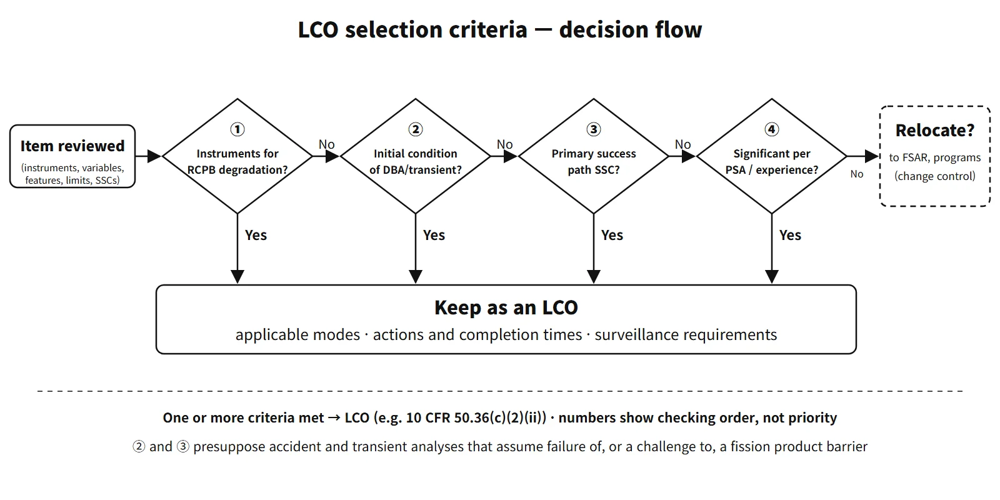

Operation, Regulation & Quality · C-OP-002
Limiting Condition for Operation (LCO) — The Four Selection Criteria and the Rules for Reading Actions and Completion Times
Minimum equipment capability for safe operation, chosen by four criteria and managed through required actions and completion times.
A limiting condition for operation (LCO) is the minimum functional capability or performance level of equipment needed to keep a reactor facility in a safe state; items meeting one or more of the four selection criteria are placed in the Technical Specifications, and when an LCO is not met, the specified required actions must be completed within their completion times or the reactor must be shut down.
In the United States, for example, the basis is 10 CFR 50.36(c)(2).
Principle and mechanism
The four selection criteria — which part of the safety analysis each protects
The selection criteria filter "what stays in the Technical Specifications". They are easiest to remember by their relationship to the safety analysis.
| Criterion | Gist of the criterion (10 CFR 50.36(c)(2)(ii)) | Relationship to the analysis | Applies to |
|---|---|---|---|
| 1 | Instrumentation in the main control room to detect and indicate significant degradation of the reactor coolant pressure boundary (RCPB) | Early detection before an accident | Instruments |
| 2 | Process variables, design features or operating restrictions that are initial conditions of design basis accident and transient analyses assuming failure of or a challenge to a fission product barrier | Starting point of the analysis | Variables, design features, operating restrictions |
| 3 | Structures, systems and components that are part of the primary success path mitigating such accidents and transients | Mitigating means in the analysis | SSCs |
| 4 | SSCs that operating experience or PSA shows to be significant to public health and safety | Risk significance outside the analysis | SSCs |
10 CFR 50.36 requires an LCO for each item meeting "one or more" of the criteria. Criteria 1 to 3 existed from the 1987 interim policy statement; criterion 4 was at that time a separate sentence saying "RHR, RCIC, SLC and RPT are retained", and the 1993 final policy statement turned it into a criterion. The 1995 revision of 50.36 made them a rule. Items that meet none of the criteria were relocated to licensee-controlled documents such as the FSAR and programs; the LCO for the PWR boration systems, for example, was moved this way.
Read an LCO in four boxes
- LCO statement: what must be operable or within limits
- Applicability: in which operating modes or conditions it is required. For example, ECCS (operating) applies in Modes 1, 2 and 3, and the SITs in Modes 1 and 2 and in Mode 3 with pressurizer pressure above a set value.
- Actions: condition – required action – completion time. The last condition is usually the shutdown action: "if the actions and completion times are not met, Mode 3 → Mode 4 or 5".
- Surveillance requirement (SR) + frequency: tests, calibrations and inspections that confirm the LCO is met.
The Bases state which criterion each specification meets (e.g. "satisfies Criteria 2 and 3").
When does the completion time start?
Unless otherwise specified, the completion time is counted from the time of discovery of the inoperability or the out-of-limit variable. If the LCO is restored within the completion time, the remaining actions need not be completed (LCO 3.0.2). If the actions are not carried out and the next condition is entered, the new clock starts from the time that condition is entered. Where a note says "separate condition entry is allowed for each train", each train has its own clock. As in the not-restored example in the figure, the 6-hour and 36-hour shutdown deadlines are both counted from entry into the next condition; the 36 hours are not added after the 6 hours.
![Left: an emergency diesel generator render above four cards dissecting the AC power LCO: LCO, 2 offsite circuits and 2 EDGs operable; applicability, Modes 1 to 4; actions, condition, action and completion time; SR, surveillance and frequency; basis criterion 3. Right: Gantt chart against time after the inoperability is found, 0 to 96 hours: condition B with a 1-hour check of offsite circuits, a 24-hour common-cause check of the other EDG and 72 hours to restore; a restored example at 40 hours where the actions end under LCO 3.0.2; and a not-restored example where condition G is entered at 72 hours, with Mode 3 reached by 78 hours (G entry plus 6) and Mode 5 by 108 hours (G entry plus 36)](../../assets/images/concepts/c-op-002-lco/fig1-lco-completion-time.webp)
General rules LCO 3.0.x and SR 3.0.x
| Rule | Content |
|---|---|
| LCO 3.0.1 | LCOs must be met in the applicable modes |
| LCO 3.0.2 | On discovering an LCO not met, perform the associated actions; restoration within the completion time ends the actions |
| LCO 3.0.3 | Staged shutdown when no associated action exists or the actions cannot be met |
| LCO 3.0.4 | Restriction on entering an applicable mode with an LCO not met. Allowed only when the actions permit continued operation indefinitely, or after a risk assessment (some systems excluded). Mode changes in the shutdown direction are not prevented |
| LCO 3.0.5 | Temporary return to service solely to perform tests demonstrating operability |
| LCO 3.0.6 | When a support system LCO is not met, perform only the support system actions; the safety function determination program evaluates loss of safety function |
| LCO 3.0.7 | Exceptions for special tests such as physics tests |
| SR 3.0.1 | SR not met, or not performed within its frequency = LCO not met |
| SR 3.0.2 | Frequency may be extended up to 1.25 times (no cumulative extension) |
| SR 3.0.3 | On discovering a missed surveillance, declaring the LCO not met may be delayed up to 24 hours or the surveillance frequency, whichever is longer (risk assessment beyond 24 hours) |
| SR 3.0.4 | The SR must be met before entering an applicable mode |
LCO 3.0.8 (snubbers) and 3.0.9 (non-T/S barriers) are rules added in some editions.
What it means in a plant
Examples by selection criterion (APR1400 T/S structure based on the CE Standard Technical Specifications, NUREG-1432):
| Criterion | LCO examples |
|---|---|
| 1 | RCS leakage detection instrumentation (containment sump level and flow, containment atmosphere radioactivity monitoring) |
| 2 | DNB parameters (pressurizer pressure, cold-leg temperature, RCS flow), shutdown margin, power distribution limits, RCS specific activity |
| 3 | Reactor protection system and ESFAS instrumentation, ECCS, SITs, auxiliary feedwater, containment spray, AC power (2 offsite circuits + 2 EDGs) |
| 4 | Shutdown cooling (RCS loop) requirements in Modes 4 and 5, remote shutdown system |
The selection criteria are the same for Westinghouse-type, OPR-type and APR-type plants. The differences lie in the names of the specifications (accumulators and RHR in W-type plants, SITs and SDC in CE and APR types) and in reflecting APR1400-specific equipment (POSRVs, IRWST, direct vessel injection).
- Upper and lower limits on SIT pressure and level: the lower limits secure the injection timing and the reflood water volume assumed in the large-break LOCA analysis; the upper limits preserve the nitrogen space and the tank design margin so that the analysis assumptions are not exceeded. Holding both ends of the analyzed range is the intent of this LCO. Even so, the Bases classify the SITs only under criterion 3, as mitigating equipment in the analysis (the same applies to W-type accumulators).
- AC power: a typical criterion 3 example, and the time axis in the figure follows this structure.
- Re-evaluating criterion 4: in 2020 the US industry (TSTF) proposed re-evaluating, with current PSA and operating experience, whether the remote shutdown system and RHR still meet criterion 4. No conclusion has been reached yet.
Regulatory and design criteria
The criteria below are examples from the United States (US NRC and the industry Technical Specifications Task Force, TSTF).
| Basis | Key point |
|---|---|
| 10 CFR 50.36(c)(2)(i), (ii), (iii) | LCO definition; criteria 1–4; licenses issued before 18 August 1995 are not required to propose revisions |
| NUREG-1431 (W) and 1432 (CE), Sections 1.3 and 3.0 | Completion time rules, LCO 3.0.x and SR 3.0.x |
| TSTF-359 and TSTF-358 | Mode entry under LCO 3.0.4 with a risk assessment; extended delay under SR 3.0.3 |
Easily confused pairs
| Safety limit (SL) | Limiting condition for operation (LCO) | Surveillance requirement (SR) | |
|---|---|---|---|
| Covers | Process-variable limits protecting the barriers | Minimum equipment function and performance | Tests confirming the LCO is met |
| If departed from | Shutdown, report, restart on approval | Actions and completion times; shutdown if not met | Treated as LCO not met |
| Nature | A line that must not be crossed | An allowed, managed condition | Means of confirmation |
The selection criteria are also different from the safety classification. Safety class is a classification of design and quality requirements; the selection criteria choose what stays in the Technical Specifications. Some equipment, such as the remote shutdown system, becomes an LCO through criterion 4. LCO 3.0.3 must also be distinguished from the shutdown actions within individual specifications: where a specification has its own shutdown action, its times take precedence.
Key points at a glance
- Definition: minimum functional capability or performance level of equipment to maintain a safe state (10 CFR 50.36(c)(2)(i)).
- When not met: complete the required actions within the completion time; otherwise staged shutdown.
- Criterion 1: instrumentation in the main control room to detect and indicate significant RCPB degradation — e.g. leakage detection instrumentation.
- Criterion 2: initial conditions of design basis accident and transient analyses — e.g. DNB parameters, shutdown margin.
- Criterion 3: SSCs in the accident-mitigating primary success path — e.g. ECCS, SITs, AC power.
- Criterion 4: SSCs significant per operating experience or PSA — e.g. shutdown cooling in Modes 4 and 5, remote shutdown.
- Decision: one or more criteria met → LCO; others relocated to the FSAR or programs.
- Structure of a specification: LCO + applicable modes + actions (condition, required action, completion time) + SR.
- General rules: clock starts at discovery; LCO 3.0.2 (restoration ends the actions), 3.0.3, 3.0.4 (mode-entry restriction); SR 1.25 times.
